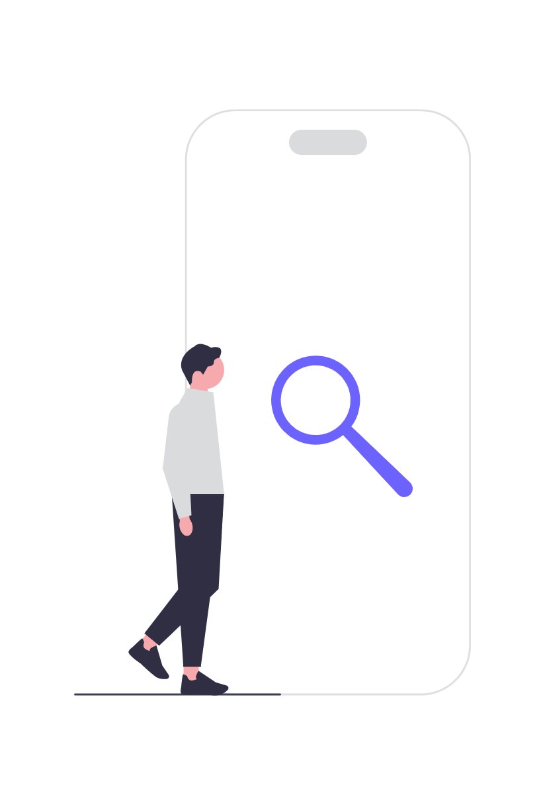

The ultimate bullet journal app to document, reflect, and embrace your personal journey
Unlock the simplicity of online journeling - say goodbye to the hassle of pen and paper and hello to effortless journeling with just a few clicks
Not just words on screen - our journels are beautifully displayed and neatly organised.
Whether you're at home or exploring the far corners of the world, create and reflect on your experiences, thoughts, and emotions from anywhere on the globe.
